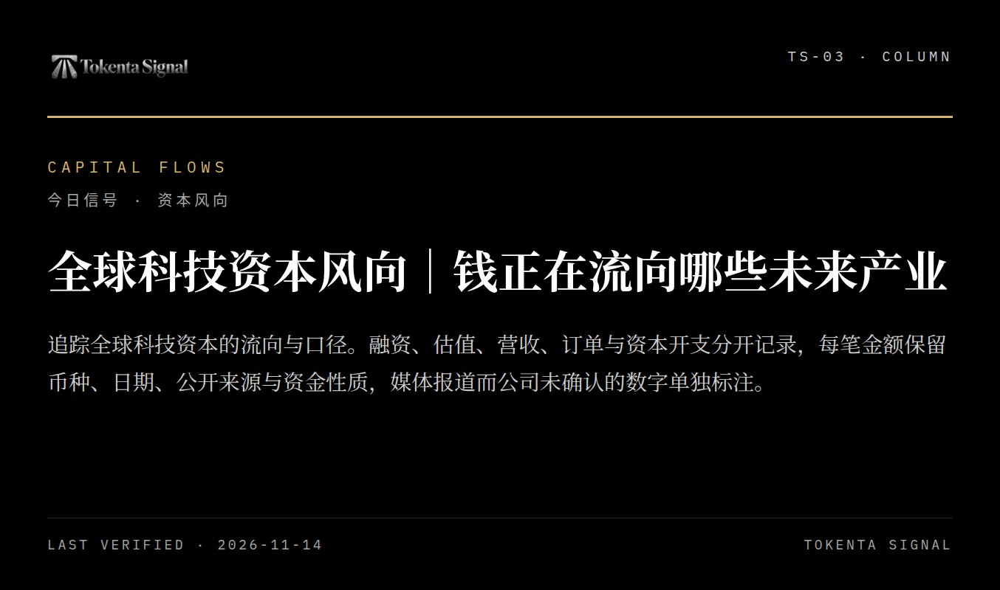
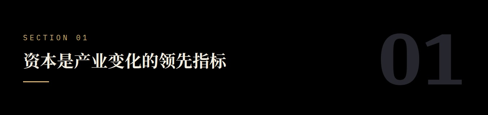
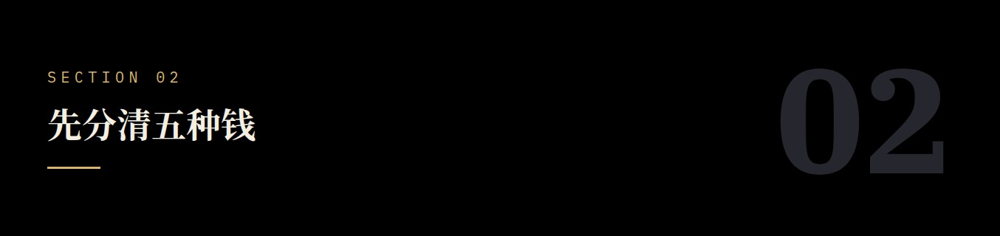
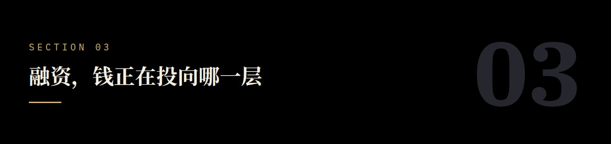
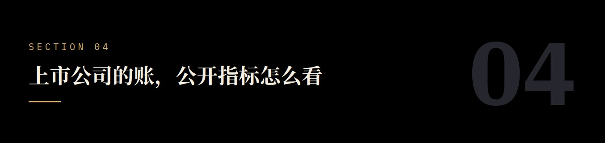
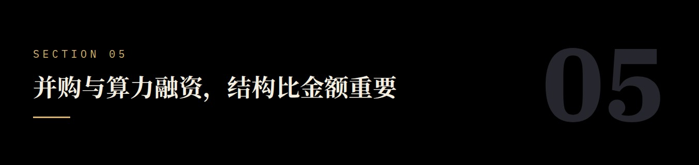
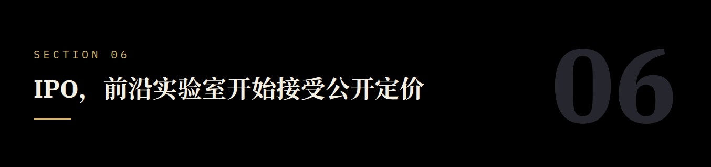
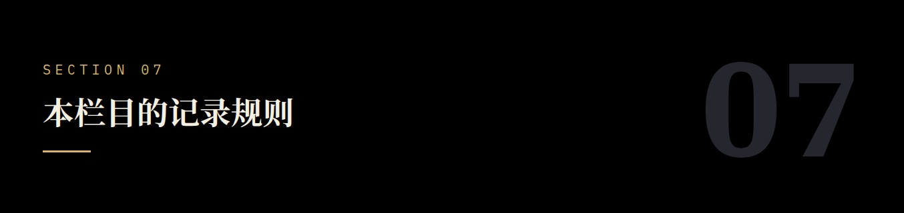

产业变化先出现在钱的流向上。模型公司拿到的融资、芯片公司的财报、云厂商签下的长期租约，都会比产品发布早几个季度告诉市场，下一阶段的竞争要打在哪里。这个栏目长期记录这些资金动作，并把每一笔钱的口径写清楚。
资本数据最大的风险是口径混杂。融资额、估值、营收、订单与资本开支经常被写进同一句话，数字看着相近，含义完全不同。本栏目给每笔金额保留币种、日期、公开来源与资金性质，媒体报道而公司未确认的数字单独标注，读者看到的每张卡片都可以点回原始出处核对。本栏目只记录与分析公开信息，不构成任何投资建议。

技术路线要变成产业现实，先要有人付钱。训练集群、数据中心、光连接器件、训练数据，每一层都需要提前数个季度投入。等产品上线再看，资本早已完成一轮布局。融资、并购与资本开支数据因此比发布会更早暴露方向，这也是本栏目把资本单独设为一个观察口的原因。
领先不等于准确。钱投下去的方向可能失败，估值也可能透支未来。本栏目的用法是把资本动作当作观察清单，记录谁在投、投向哪一层、用什么结构投，再用后续的财报与产品进展逐项验证，不把单笔交易直接当成结论。

融资是公司从投资者手里拿到的现金，例如一轮股权融资的金额。估值是这轮交易给整个公司标出的价格，钱不进公司账。两者常在同一篇公告里出现，必须分开读。营收是已经确认的收入，订单与合同额是未来可能转成收入的承诺，年化运行率是把短期收入拉直成一年的估算，三者更不能混用。
资本开支是公司为长期资产花的钱，数据中心、服务器与芯片采购都算在内。并购对价要看支付方式，现金对价是确定数字，全股票交易的金额会随股价浮动。IPO 募资是公司上市卖新股拿到的钱，与上市前后的私募配售也要分开。本栏目的卡片逐项标注资金性质，目的就是让读者第一眼先看口径，再看数字。

模型基础设施层拿钱的速度最快。推理平台、智能体平台与治理工具是近期的融资集中地。LangChain 的 C 轮是样本，公司把资金投向 LangSmith 平台，押注企业部署智能体之后，治理与可观测会成为刚需。资金用途写在官方博客里，比融资额本身更能说明方向。
应用层与数据层的融资逻辑不同。Mercor 卖的是人类专家生产的训练数据，收入来自 AI 实验室的采购预算。Tokenta 判断，这一层的估值锚点正在从用户数转向收入质量，谁离付费预算更近，谁的融资故事更硬。
机器人与智能制造是资本新开的一层。Bedrock Robotics 完成 6 亿美元 C 轮，投后估值 41 亿美元，据公开融资汇总报道，资金用于自主工程设备的商业部署。物理世界的部署成本远高于软件，这一层的融资额大、周期长，验证要等设备真正上了工地。
LangChain C 轮融资
事件 LangChain 完成 C 轮融资，资金投向 LangSmith 智能体平台
日期 2026 年 11 月 13 日
金额与币种 融资 3 亿美元，投后估值 30 亿美元
资金性质 股权融资与公司估值，两项分开记录，领投方为 CapitalG
公开来源 LangChain 官方博客，公司自报口径
Tokenta 判断 钱投向智能体治理，说明企业部署的瓶颈正在从能不能用转向能不能管
公司官方博客口径，融资额与估值均为公司自报数字。
Mercor D 轮融资
事件 AI 训练数据公司 Mercor 完成 D 轮融资
日期 2026 年 11 月 10 日
金额与币种 融资 7.5 亿美元，估值 200 亿美元
资金性质 股权融资与公司估值，本轮包含员工股回购安排
公开来源 Mercor 官方博客，公司自报口径
Tokenta 判断 训练数据的买家是实验室本身，这类公司的收入质量比消费级应用更容易验证
公司官方博客口径。本轮包含员工股回购，部分交易金额不进入公司账户，不能全额按公司融资收入理解。

上市公司每季度交一次账，财报是资本栏目里口径最硬的数据。看芯片公司，先看数据中心分部营收的增速与占比，再看下一季度的指引。AMD 第三季度数据中心营收占总营收约 64%，这个占比比绝对金额更能说明业务重心迁移到了哪里。
未上市公司的财务数字要降一级看待。OpenAI 的季度营收来自投资者电话会，经媒体报道流出，公司没有发布正式财报。这类数字可以记录，但必须标明来源层级，与上市公司财报分开放置，引用时不能去掉出处。
AMD 2026 年第三季度财报
事件 AMD 公布 2026 年第三季度财务结果
日期 2026 年 11 月 3 日
金额与币种 季度营收 133.77 亿美元，同比增长 45%，其中数据中心营收 85.46 亿美元，同比增长 97%
资金性质 已确认营收，另有第四季度营收指引约 170 亿美元，上下浮动 3%
公开来源 AMD 官方财报新闻稿，公司确认口径
Tokenta 判断 数据中心占营收约六成四，AMD 的业务重心已经完成向 AI 算力的迁移
公司官方财报口径。第四季度数字为指引，属于前瞻性表述，不是已实现营收。
OpenAI 第三季度营收披露
事件 OpenAI 在投资者电话会上披露第三季度经营数据，企业业务同比翻倍，已成为收入主体
日期 2026 年 11 月 10 日电话会，11 月 11 日见报
金额与币种 季度营收约 100 亿美元，调整后经营亏损 109 亿美元
资金性质 营收与经营亏损，未上市公司口径，非财报数据
公开来源 媒体报道口径，华尔街日报与 The Information 引述闭门投资者电话会，The Decoder 跟进报道，公司未公开确认
Tokenta 判断 营收破百亿与亏损扩大同时成立，下一阶段要看亏损收窄的速度
媒体报道口径，公司未确认。数字来自闭门投资者电话会，未经审计，不与上市公司财报同级使用。调整后经营亏损未计入 26 亿美元股权激励。

并购看结构先于看金额。全股票交易锁死的是换股比例，公告日的企业价值只是按当时股价折算的快照。Marvell 收购 Lumentum 一案，交割目标排到 2028 年上半年，中间还要过股东投票与监管审查，公告金额与最终价值之间隔着一年多的股价波动。
算力竞争还催生了新的融资结构。实验室自己不建数据中心，第三方建好后长期租用，再由信用更强的科技巨头为租约兜底。谷歌为 Anthropic 在 TeraWulf 园区的租约提供信用支持，就是这一结构的样本。这笔钱既不是谷歌的资本开支，也不是 Anthropic 的融资，卡片里按租约与信用支持单独归类。
Marvell 收购 Lumentum
事件 Marvell 与 Lumentum 签署最终协议，全股票收购，Lumentum 股东每股换 4.5 股 Marvell 股票，合并后约占 33%
日期 2026 年 11 月 2 日宣布，目标 2028 年上半年交割
金额与币种 参考企业价值 1150 亿美元，按 2026 年 10 月 28 日未受影响收盘价折算，约每股 1132 美元，溢价约 23.9%
资金性质 并购对价，全股票支付，无现金对价，金额随股价浮动
公开来源 双方联合公告，Marvell 投资者关系官网，公司确认口径
Tokenta 判断 AI 基建的竞争已经从算力芯片蔓延到光连接层，买方买的是器件与芯片的协同设计能力
公司公告口径。交易尚未交割，1150 亿美元是公告日的参考企业价值，最终价值随 Marvell 股价浮动，换股比例才是合同锁定的条款。
谷歌为 Anthropic 租约提供信用支持
事件 谷歌签署信用支持协议，为 Anthropic 在 TeraWulf 肯塔基州 401 兆瓦园区的长期租约兜底
日期 2026 年 11 月 4 日
金额与币种 租约总额约 190 亿美元，期限 20 年
资金性质 数据中心租约与第三方信用支持，不是资本开支，也不是股权融资
公开来源 TeraWulf 向 SEC 提交的 8-K 备案（含租约细节附件），上市公司文件口径
Tokenta 判断 巨头的信用正在变成算力的融资工具，实验室用长期租约换建设速度，巨头用信用换绑定关系
SEC 备案口径。190 亿美元是 20 年租约总额，谷歌的角色是信用支持方，金额不能记到任何一方的资本开支或融资名下。

Anthropic 启动 IPO 路演，是前沿实验室第一次把定价权同时交给公开市场与供应链伙伴。公开募资之外还有大额私募配售，认购方主要是它的芯片与云供应商。供应商同时做股东，绑定关系写进了交易结构里。
读 IPO 先拆股数与口径。同一家公司，按发行后股数算出的市值与按完全稀释股数算出的市值可以差出数千亿美元，两个数字都可能出现在报道里。本栏目引用估值时注明计算口径，媒体报道的定价与交易日期在公司确认前一律标注待确认。
Anthropic IPO 路演
事件 Anthropic 启动 IPO 路演，拟在纳斯达克上市，代码 ANT，发行 8.25 亿股 A 类普通股
日期 2026 年 11 月 10 日启动路演
金额与币种 定价区间每股 70 至 78 美元，公开募资最高约 644 亿美元，另有 260 亿美元私募配售，合计最高约 904 亿美元
资金性质 IPO 募资与私募配售，两部分分开记录。估值口径并存，发行后股数口径约 9160 亿至 1.02 万亿美元，完全稀释口径据纽约时报约 1.26 至 1.41 万亿美元，均为媒体转述口径，公司未确认
公开来源 媒体报道口径，Silicon Report 报道，募资数据引路透，公司未就报道细节公开确认
Tokenta 判断 私募名单里的供应商才是这场上市的定价锚，公开市场给价格，供应链给绑定
媒体报道口径，公司未确认。定价日期与首日交易日为媒体引述知情人士的说法，公司文件未确认。私募配售中谷歌与英伟达各认购约 100 亿美元，买方以 Anthropic 的芯片与云供应商为主。

本栏目长期维护三类记录，上市公司财报与指引、一级市场融资与并购、IPO 与重大资本结构变化。每条记录保留原始出处链接与核验日期，数字被公司更正时同步修订并注明。本栏目不推荐任何具体证券，不提供个性化投资建议，文中的判断只针对产业结构与资本流向。本篇内容不构成任何投资建议。

01 先看资金性质，再看金额。卡片第一判断项永远是这笔钱属于融资、估值、营收、订单还是资本开支，口径不同，数字不可直接相加或比较。
02 看来源层级。公司官方公告与 SEC 备案为第一层，上市公司财报为第一层，媒体引述闭门场合的数字为第二层，卡片里已经分开标注，引用时保留出处。
03 看日期与状态。并购要分清宣布与交割，IPO 要分清路演、定价与上市，融资要分清宣布与到账。本栏目按事件发生日期记录，后续状态变化在新文章中更新。
04 本栏目按财报季与重大交易事件更新，入口文章保留长期有效的口径框架与代表性案例，最新一期资本事件文章从菜单与文内索引进入。

SOURCES · 来源与核验
[1] LangChain 官方博客，Series C 融资公告，2026 年 11 月 13 日，公司自报口径
[2] Mercor 官方博客，Series D 融资公告，2026 年 11 月 10 日，公司自报口径
[3] AMD 官方财报新闻稿，2026 年第三季度财务结果，2026 年 11 月 3 日
[4] Marvell 与 Lumentum 联合公告，2026 年 11 月 2 日，Marvell 投资者关系官网
[5] TeraWulf 8-K 备案，谷歌信用支持协议，2026 年 11 月 4 日，SEC 文件
[6] The Decoder，OpenAI 第三季度营收报道，2026 年 11 月 11 日，媒体报道口径，公司未确认
[7] Silicon Report，Anthropic IPO 路演报道，2026 年 11 月 10 日，媒体报道口径，公司未确认
[8] TeraWulf 8-K 附件，Anthropic 20 年租约与 401 兆瓦关键 IT 负载细节，SEC 文件
LAST VERIFIED · 2026-11-14
TOKENTA SIGNAL
Extracting signals from the noise. 本栏目内容来自公开来源并标注核验日期，不构成任何投资建议。
signal.tokenta.space · team@tokenta.space